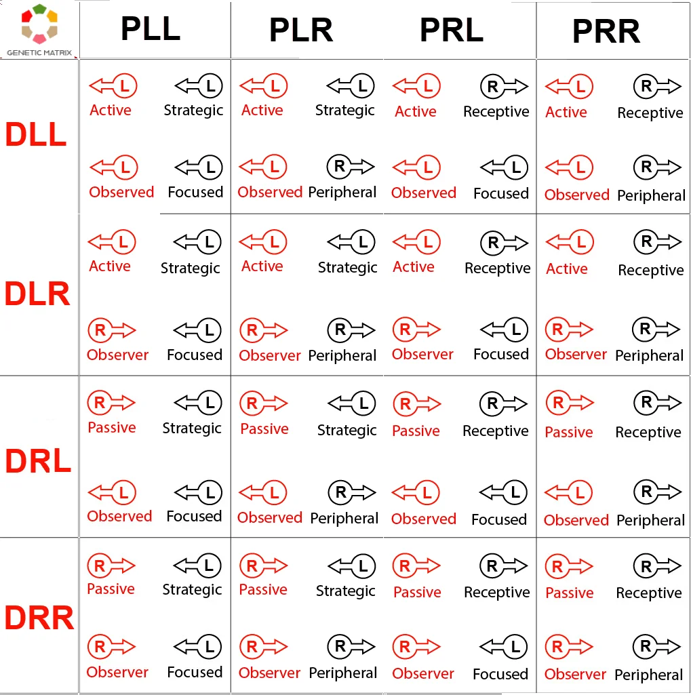
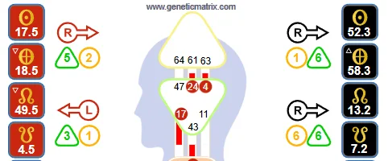

Mecánicas Más Profundas · Variables
Las cuatro flechas en la parte superior de su Bodygraph revelan su arquitectura cognitiva, mostrando cómo está diseñado para recibir nutrición, encontrar el entorno adecuado, procesar la consciencia y percibir el mundo.
Esta es una de las áreas más avanzadas del Diseño Humano. No reemplaza al Tipo, la Estrategia, la Autoridad o el Perfil, y no debe tratarse como un atajo que evite las mecánicas fundamentales. Lo que las Variables sí ofrecen es una comprensión más precisa de cómo su cuerpo y mente están configurados para recibir, procesar y orientar la consciencia.
Las Variables se refieren a las cuatro flechas mostradas en la parte superior del Bodygraph. Cada flecha apunta hacia la izquierda o hacia la derecha, creando un patrón de cuatro partes que refleja la manera en que su diseño está diferenciado a un nivel sutil.
A menudo se habla de las Variables de manera imprecisa, pero no es una etiqueta de personalidad. Es un marco de subestructura que describe la orientación. Entendido correctamente, muestra cómo está diseñado el cuerpo para operar y cómo está diseñada la mente para ver y enmarcar la experiencia.
Importante
Las Variables dependen de una hora de nacimiento precisa. Incluso pequeñas diferencias pueden cambiar la orientación de las flechas.
Las Variables se basan en el Tono y aparecen en el Bodygraph como las cuatro flechas en la parte superior de la carta, mostrando la orientación izquierda o derecha de aspectos clave de su diseño.
Flecha Superior Izquierda
Determinación
Describe cómo están diseñados el cuerpo y el cerebro para recibir y procesar información. Pertenece al lado corporal de las Variables.
Flecha Inferior Izquierda
Entorno
Describe cómo el cuerpo se integra dentro del entorno correcto. Pertenece al lado corporal de las Variables.
Flecha Superior Derecha
Motivación
La mecánica más profunda conectada al Estilo Mental y la consciencia mental. Pertenece al lado de la personalidad de las Variables.
Flecha Inferior Derecha
Perspectiva
Describe cómo está diseñada la mente para ver el entorno correctamente. Pertenece al lado de la personalidad de las Variables.
Estas mecánicas de Variables tienen sus propias páginas dedicadas. Aquí importan porque forman la estructura de las Variables en el Diseño Humano. Explore cada una en más detalle a continuación:
Las Variables son más fáciles de entender cuando separa las flechas en dos lados.
Las flechas del lado izquierdo corresponden al lado del diseño de la carta:
Estas flechas hablan más directamente de cómo el cuerpo recibe y procesa información, y cómo se integra dentro del entorno correcto.
Las flechas del lado derecho corresponden al lado de la personalidad de la carta:
Estas flechas hablan más directamente de cómo piensa la mente y cómo ve el entorno correctamente.
Por esto las Variables deben leerse como un sistema en lugar de como cuatro etiquetas desconectadas. Las flechas solo operan correctamente como una cadena: la cognición correcta en el cerebro lleva al entorno correcto; el entorno correcto fija la vista correcta; y la vista correcta proporciona la información correcta para que la mente se convierta en una autoridad externa única. Hasta que el cuerpo esté alineado correctamente, ni la vista correcta ni el funcionamiento mental correcto son posibles.
La distinción central en las Variables es si una flecha apunta hacia la izquierda o hacia la derecha. Estos no son juicios de valor. La izquierda no es superior a la derecha, y la derecha no está más evolucionada que la izquierda. Describen diferentes modos de orientación.
← Variables Hacia la Izquierda
Enfoque estratégico
Consistencia en un campo definido
Direccionalidad definida
Estructura
Especificidad
Compromiso activo
Atención concentrada
→ Variables Hacia la Derecha
Receptividad
Apertura
Flexibilidad
Consciencia periférica
Atención panorámica
Procesamiento no estratégico
Compromiso no activo
El error que comete la mayoría de las personas es confundir las Variables con la vieja noción de hemisferios cerebrales izquierdo y derecho. Eso no comprende el punto. Izquierda y derecha en las Variables describen modos de operación dentro del sistema, no una división simplista entre estilos de pensamiento analítico y lógico versus creativo e intuitivo.
Debido a que cada una de las cuatro flechas puede apuntar en una de dos direcciones, hay 16 configuraciones posibles de Variables. Lo que importa no es memorizar el código por sí mismo, sino entender que cada disposición crea una relación distinta entre cómo el cuerpo y el cerebro reciben y procesan información, cómo el cuerpo se integra dentro del entorno correcto, cómo la mente ve el entorno, y cómo piensa la mente.

La tabla anterior muestra las 16 disposiciones posibles de Variables creadas por las cuatro flechas. Estas se leen como patrones integrados de orientación corporal y mental, no como códigos aislados.
| Código | Posición | Izquierda (←) | Derecha (→) |
|---|---|---|---|
| D _ _ | Diseño (lado corporal) | - | |
| D L_ o D R_ | 1ª letra: Estilo Cerebral (flecha superior izquierda) | L = Activo | R = Pasivo |
| D _L o D _R | 2ª letra: Estilo de Entorno (flecha inferior izquierda) | L = Observado | R = Observador |
| P _ _ | Personalidad (lado mental) | - | |
| P L_ o P R_ | 1ª letra: Estilo Mental (flecha superior derecha) | L = Estratégico | R = Receptivo |
| P _L o P _R | 2ª letra: Perspectiva (flecha inferior derecha) | L = Enfocada | R = Periférica |
Nota: En el lado de la Personalidad, el orden correcto para la corrección de las Variables es primero la Perspectiva y segundo el Estilo Mental. La convención de visualización estándar se ha conservado aquí, aunque originalmente fue especificada incorrectamente por Ra Uru Hu y posteriormente reconocida como tal.
Cada configuración combina estas cuatro mecánicas en un patrón único de Variables. Las filas describen el lado del Diseño a través del Estilo Cerebral y el Estilo de Entorno. Las columnas describen el lado de la Personalidad a través del Estilo Mental y la Perspectiva. Léalas juntas como un patrón integrado de orientación corporal y mental, no como cuatro etiquetas aisladas.
Las Variables son valiosas porque refinan la orientación. No le dicen si usted es más consciente, más espiritual, más avanzado o más alineado que cualquier otra persona. Lo que sí puede indicar con más precisión es:
Por eso las Variables importan a los estudiantes serios del Diseño Humano. No es un dispositivo de marca. Es una descripción de cómo está configurado su sistema debajo de las capas más familiares de la carta, revelando el patrón de su singularidad absoluta en su nivel más alto.
Las Variables aparecen como las cuatro flechas en la parte superior de la carta de Diseño Humano, posicionadas alrededor del área de la cabeza y el área de los nodos. Cada flecha apunta hacia la izquierda o hacia la derecha. Juntas, forman la configuración completa de Variables.

| Posición de la Flecha | Área de Variables | Dominio Amplio |
|---|---|---|
| Superior Izquierda | Estilo Cerebral | Cuerpo / absorción y procesamiento |
| Inferior Izquierda | Estilo de Entorno | Cuerpo / integración ambiental |
| Superior Derecha | Estilo Mental | Mente / estilo de pensamiento |
| Inferior Derecha | Perspectiva | Mente / visión |
Las flechas del lado izquierdo pertenecen al lado del Diseño de las Variables. Las flechas del lado derecho pertenecen al lado de la Personalidad. Leídas juntas, muestran cómo el cuerpo y la mente están orientados a través de las Variables.
Las Variables están estrechamente relacionadas con las mecánicas más profundas del Diseño Humano, pero no deben confundirse con ellas. Las flechas apuntan hacia dominios avanzados importantes como Cognición Tonal, Determinación, Entorno, Perspectiva y Motivación. Esos temas pueden y deben estudiarse por derecho propio. Esta página trata sobre el sistema de Variables en sí mismo en lugar de intentar enseñar todas esas mecánicas en su totalidad. Vea la sección Mecánicas Más Profundas para obtener una comprensión más profunda de estas áreas.
Esa distinción importa. Si una página de Variables intenta convertirse en una guía completa de PHS, Entorno, Motivación y Perspectiva a la vez, pierde claridad temática y se vuelve más débil tanto para búsquedas como para usuarios serios.
Las Variables no son jerárquicas. Izquierda y derecha son orientaciones diferentes, no clasificaciones.
Las Variables son subestructura avanzada. No anulan los fundamentos de la carta. De hecho, no funcionan correctamente sin Estrategia y Autoridad.
Cada flecha puede describirse individualmente, pero el significado real emerge a través del patrón completo de las cuatro flechas. Usted es un todo holístico; cada flecha por sí sola es útil para el estudio, no para vivir.
Las Variables describen orientación y diferenciación última. No es un dispositivo de marca, un eslogan o una herramienta de comparación.
Este es comportamiento puro del No-Ser. Sus Variables son correctas como son, y no puede sentirse realizado forzándose hacia cualquier otra modalidad.
Mecánicas avanzadas más allá de la carta fundamental.
Cómo el cuerpo y el cerebro están diseñados para absorber y procesar información.
Cómo el cuerpo se integra dentro del entorno correcto.
La mecánica más profunda conectada con el Estilo Mental y la conciencia mental.
Cómo la mente está diseñada para ver correctamente el entorno.
Para ver sus Variables, necesita una carta de Diseño Humano precisa con una hora de nacimiento confiable y acceso a las flechas de Variables. Las cartas gratuitas de Genetic Matrix no incluyen flechas de Variables, por lo que se requiere membresía para ver la configuración completa de flechas.
Get Pro →